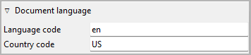
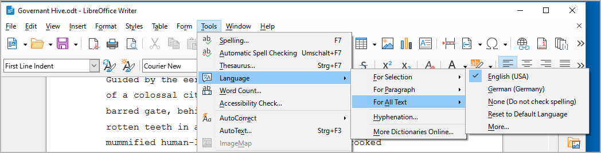
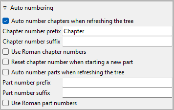
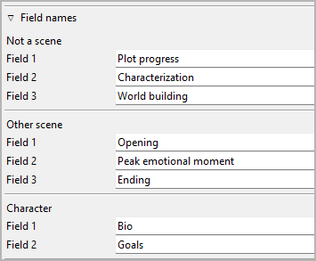
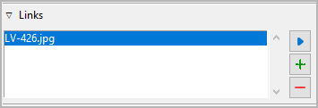
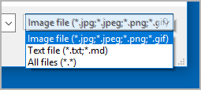

Book properties
The Book properties view opens in the right pane
when you select “Book” in the tree,
or when you click on the  toolbar icon.
It is the initial view after opening a novelibre project.
toolbar icon.
It is the initial view after opening a novelibre project.
Document language
Expand or collapse this frame by clicking on the label.
Language code acc. to ISO 639-1
Country code acc. to ISO 3166-2
This information controls the spelling checker for export documents.
If not set, the System locale setting will be used as default.
Hint
You can also set or change the document language with Writer, then it will be applied on import.

Auto numbering
Expand or collapse this frame by clicking on the label.
- Auto number chapters/parts when refreshing the tree
If this checkbox is ticked, all chapters/parts are automatically numbered each time the tree is refreshed. The chapter titles are replaced with a
prefix-number-suffixpattern (without the dashes).Hint
You can optionally exclude individual chapters/parts from auto-numbering in the Chapter/part properties.
Prefix and suffix entries can be completed by pressing the Enter key.
Note
Make sure to add a space character to separate the prefix or suffix from the chapter or part number.
- Use Roman chapter numbers
By default, arabic numbers, like “1”, “2”, “3” … are used for auto-numbering. If this checkbox is ticked, Roman numbers, like “I”, “II”, “III”, “IV” … are used instead.
- Restart chapter numbering at part beginning
By default, the chapters are numbered consistently across the parts. If this checkbox is ticked, the chapter numbering starts again with “1” in each part.
Field names
Expand or collapse this frame by clicking on the label.
novelibre provides some ready-made fields for sections and characters
to store information that should be at hand when writing.
You can name these fields to fit into your individual story planning
concept.
Editing the categories can be completed by pressing the Enter key.
- Not a scene
When you set the Scene frame to Not a scene, you see the three text boxes whose names you enter here. These categories then apply to all sections that don’t represent scenes.
- Other Scene
When you set the Scene frame to Other, you see the three text boxes whose names you enter here. These categories then apply to all sections that represent scenes other than “Action” and “Reaction”.
- Character
Here you enter the names of the two character fields, you can open in the character properties view.
Hint
You can reset a field name to its default value by clearing the input field and pressing the Enter key.
Story time
Expand or collapse this frame by clicking on the label.
To get an overview of the course of the story time, you can enter date/time information for each section. The date can be specific (YYYY-MM-DD) or unspecific (number of days, e.g. from the beginning of the story).
- Reference date
The reference date is optional. It can be used to convert relative dates into absolute dates, or vice versa. The timeline software plugins may use the reference date for creating events from sections that have no date or an unspecific one.
Format: YYYY-MM-DD, according to ISO 8601.
Hint
Even if you don’t need specific dates for your story, specifying a reference date might be helpful. Thus, a day of the week can be displayed along with the unspecific date, and ages can be calculated for related characters.
- Convert dates to days
This transforms specific section dates into days, related to the reference date.
- Convert days to dates
This transforms unspecific section dates into specific ones, using the reference date.
Note
For large novels, the conversion may take some time, depending on your system. During the conversion time, the clicked button will display “Please wait …”.
Hint
The commands above convert all dated sections at once. If you want to do the conversion for single sections, just go to the Section properties view.
Writing progress
Expand or collapse this frame by clicking on the label.
With novelibre, you can set a word count target and track your writing progress.
Note
Regardless of the entries made here, you can see the word count in the status bar at any time.
- Log writing progress
By default, novelibre stores a log entry with the word counts for each day on which you edit the project. You can prevent this by unticking the Log writing progress checkbox.
Hint
For viewing the daily progress log, you may want to install the nv_progress plugin.
- Words to write
Here you can enter a number (without decimal points or separators) indicating your writing goal in words. The entry can be completed by pressing the
Enterkey.- Starting count
Here you can enter a number (without decimal points or separators) indicating the word count you want to start from. The entry can be completed by pressing the
Enterkey.- Set actual wordcount as start
Click this button to enter your current word count in the Starting count field.
- Words written
Here the difference between your actual word count and the starting count is displayed. The percentage refers to the words to write.
- Work phase
This setting is for the tree viewer “Work phase” coloring mode.
Sections with the same completion status as the selected work phase are black.
Sections that are ahead of the selected work phase are green.
Sections that are behind the selected work phase are magenta.
Links
Expand or collapse this frame by clicking on the label.
This is a list for image and research document links.
Although novelibre holds some character/location/item data, it is not the right application for extensive world building. For this, you may want to use more powerful software, like Zim Desktop Wiki. In this case, novelibre allows you to create links to the text files that will take you quickly to the right places in the wiki.
Or you have collected some images that could inspire you when writing. Then simply create links to these images to open them with your system’s standard image viewer.
Tip
If you have collected several images for a character in a folder that your standard image viewer can browse through, a single link to any image file is sufficient.
The links are displayed in a list in the order they are entered.
- Add Link
When clicking on , a file selection dialog opens. The selected file will be added to the link list.
Hint
By default, the dialog shows image files. For other file types, change the selector in the lower right corner.
- Remove Link
When clicking on
 or pressing the
or pressing the Delkey, the selected link is removed from the list.- Open Link
When double-clicking on a link, or clicking on
 ,
the link is opened with the standard application for the link’s file type.
,
the link is opened with the standard application for the link’s file type.Hint
If you want to open certain linked files with another application than the standard application, you can provide a novelibre “launcher” setting. For this, just create a text file named launchers.ini in the
.novx/configdirectory (where all configuration files are stored). Here you can assign applications to the file extensions.Zim desktop wiki pages are a special case. For this, the Zim program is assigned to the .zim extension.
This example shows a setting that makes novelibre open text files with the Zim Desktop Wiki application instead of the standard text editor:
[SETTINGS] .zim = C:/Program Files (x86)/Zim Desktop Wiki/zim.exe

Cover thumbnail
A cover thumbnail is displayed with the book properties if you provide a PNG image file with the project name along with the .novx file. The recommended image width is 100 to 200 pixels.